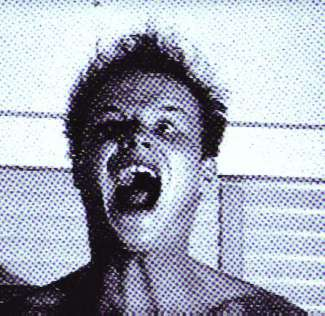
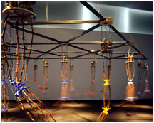

| cameras |
| home page |
|  |
|  |
| . New York Surveillance Camera Players Only someone completely distrustful of all government would be opposed to what we are doing with surveillance cameras. -- NYC Police Commissioner Howard Safir, 27 July 1999. About us After 11 September 2001 Founding Documents Funding and Expenses Getting Involved Museum Exhibitions Position Papers Privacy Policy U. . |